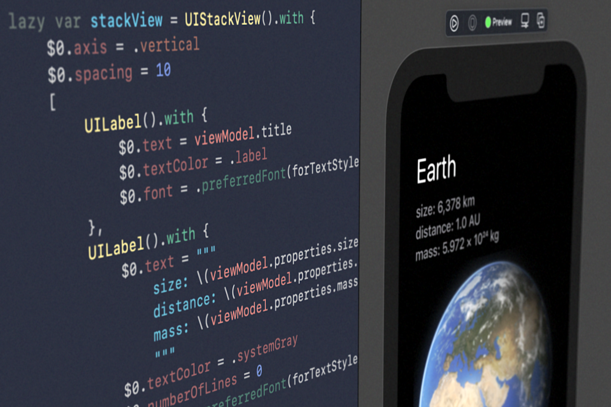

Mes projets personnels
Projets réalisés

Projet en cours
Apprends le Swift pour développer des applications iOS
Projet lointain
Mes projets scolaires
Projet en Anglais
- Objectif : Répondre au besoin d'un client en créant un site
- Explications : En groupe de 3, nous avons dû créer un site afin de répondre au besoin d'un autre groupe.
- Compétences utilisées : Comprendre les besoins d'un client, Travailler en groupe, Rédiger en anglais
- Travail de groupe : Nous avons dû exprimer nos besoins et comprendre le besoin des autres en anglais, puis réaliser le site Internet
- Travail d'équipe : J'ai réalisé la plupart du site Web
Situation d'apprentissage et d'évaluation
- Objectif : Installation d'un poste de travail pour le développement
- Compétences utilisées : Installation et configuration d'un système d'exploitation, Installation d'un IDE
- Travail personnel : J'ai installé un système d'exploitation Linux (Debian)
Situation d'apprentissage et d'évaluation en Java
- Objectif : Créer une programme permettant d'identifier la catégorie d'une dépêche
- Compétences : Travail d'équipe, Optimisation des programmes
- Télécharger le projet
Situation d'apprentissage et d'évaluation 1.05/06
- Recueil des besoins et découverte de l'environnement économique et écologique
- Compétences : Conduire un projet, Identifier ses aptitudes pour travailler dans une équipe
- Objectifs : Créer un site à l'image de l'entreprise Hardis Group résumant son environnement économique et écologique
- Travail personnel : J'ai réalisé la page d'accueil, de contexte et de relations
Situation d'apprentissage et d'évaluation en base de données
- Objectif : Créer une base de données à partir de fichier CSV sur le Titanic
- Compétences : Travail d'équipe, Optimisation de la base de données, Modéliser une base de données
- Description : Par groupe de deux, nous avons dû modéliser une base de données à partir d'un fichier CSV contenant beaucoup d'information sur le Titanic afin d'en tirer une analyse.
Situation d'apprentissage et d'évaluation en base de données
- Objectif : Créer une base de données à partir de fichier CSV sur les accidents de la route
- Compétences : Travail d'équipe, Optimisation de la base de données, Modéliser une base de données, Transformer des données, Décrire des données, Créer des graphiques, Produire des statistiques
- Description : Par groupe de deux, nous avons récupérer des fichiers CSV sur le site de statistique de l'État afin de les analyser. Tout d'abord, les données étaient scindées en deux fichiers: le fichier de données de 2006 à 2018 et celui de 2019 à 2021. Nous avons dû transformer les données afin de les exprimer de la même manière pour fusionner les deux fichier CSV dans une base de données en SQL. Une fois ceci fait, nous avons créer des vues pour faciliter notre analyse.